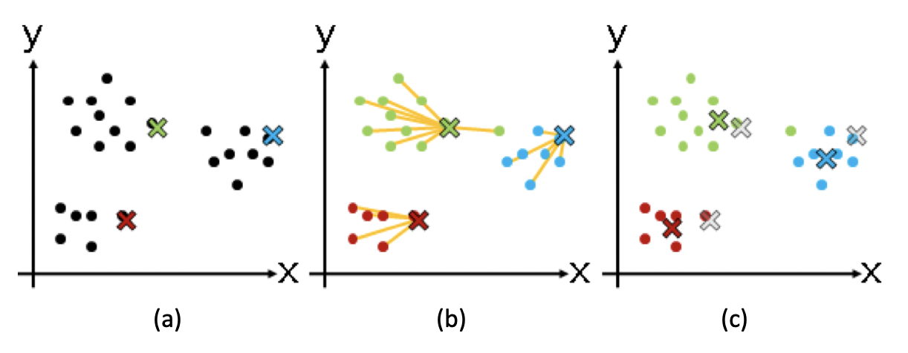
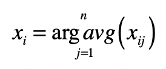

- 01 二进制：不了解计算机的源头，你学什么编程.md.html
- 02 余数：原来取余操作本身就是个哈希函数.md.html
- 03 迭代法：不用编程语言的自带函数，你会如何计算平方根？.md.html
- 04 数学归纳法：如何用数学归纳提升代码的运行效率？.md.html
- 05 递归（上）：泛化数学归纳，如何将复杂问题简单化？.md.html
- 06 递归（下）：分而治之，从归并排序到MapReduce.md.html
- 07 排列：如何让计算机学会“田忌赛马”？.md.html
- 08 组合：如何让计算机安排世界杯的赛程？.md.html
- 09 动态规划（上）：如何实现基于编辑距离的查询推荐？.md.html
- 10 动态规划（下）：如何求得状态转移方程并进行编程实现？.md.html
- 11 树的深度优先搜索（上）：如何才能高效率地查字典？.md.html
- 12 树的深度优先搜索（下）：如何才能高效率地查字典？.md.html
- 13 树的广度优先搜索（上）：人际关系的六度理论是真的吗？.md.html
- 14 树的广度优先搜索（下）：为什么双向广度优先搜索的效率更高？.md.html
- 15 从树到图：如何让计算机学会看地图？.md.html
- 16 时间和空间复杂度（上）：优化性能是否只是“纸上谈兵”？.md.html
- 17 时间和空间复杂度（下）：如何使用六个法则进行复杂度分析？.md.html
- 18 总结课：数据结构、编程语句和基础算法体现了哪些数学思想？.md.html
- 19 概率和统计：编程为什么需要概率和统计？.md.html
- 20 概率基础（上）：一篇文章帮你理解随机变量、概率分布和期望值.md.html
- 21 概率基础（下）：联合概率、条件概率和贝叶斯法则，这些概率公式究竟能做什么？.md.html
- 22 朴素贝叶斯：如何让计算机学会自动分类？.md.html
- 23 文本分类：如何区分特定类型的新闻？.md.html
- 24 语言模型：如何使用链式法则和马尔科夫假设简化概率模型？.md.html
- 25 马尔科夫模型：从PageRank到语音识别，背后是什么模型在支撑？.md.html
- 26 信息熵：如何通过几个问题，测出你对应的武侠人物？.md.html
- 27 决策树：信息增益、增益比率和基尼指数的运用.md.html
- 28 熵、信息增益和卡方：如何寻找关键特征？.md.html
- 29 归一化和标准化：各种特征如何综合才是最合理的？.md.html
- 30 统计意义（上）：如何通过显著性检验，判断你的A_B测试结果是不是巧合？.md.html
- 31 统计意义（下）：如何通过显著性检验，判断你的A_B测试结果是不是巧合？.md.html
- 32 概率统计篇答疑和总结：为什么会有欠拟合和过拟合？.md.html
- 33 线性代数：线性代数到底都讲了些什么？.md.html
- 34 向量空间模型：如何让计算机理解现实事物之间的关系？.md.html
- 35 文本检索：如何让计算机处理自然语言？.md.html
- 36 文本聚类：如何过滤冗余的新闻？.md.html
- 37 矩阵（上）：如何使用矩阵操作进行PageRank计算？.md.html
- 38 矩阵（下）：如何使用矩阵操作进行协同过滤推荐？.md.html
- 39 线性回归（上）：如何使用高斯消元求解线性方程组？.md.html
- 40 线性回归（中）：如何使用最小二乘法进行直线拟合？.md.html
- 41 线性回归（下）：如何使用最小二乘法进行效果验证？.md.html
- 42 PCA主成分分析（上）：如何利用协方差矩阵来降维？.md.html
- 43 PCA主成分分析（下）：为什么要计算协方差矩阵的特征值和特征向量？.md.html
- 44 奇异值分解：如何挖掘潜在的语义关系？.md.html
- 45 线性代数篇答疑和总结：矩阵乘法的几何意义是什么？.md.html
- 46 缓存系统：如何通过哈希表和队列实现高效访问？.md.html
- 47 搜索引擎（上）：如何通过倒排索引和向量空间模型，打造一个简单的搜索引擎？.md.html
- 48 搜索引擎（下）：如何通过查询的分类，让电商平台的搜索结果更相关？.md.html
- 49 推荐系统（上）：如何实现基于相似度的协同过滤？.md.html
- 50 推荐系统（下）：如何通过SVD分析用户和物品的矩阵？.md.html
- 51 综合应用篇答疑和总结：如何进行个性化用户画像的设计？.md.html
- 导读：程序员应该怎么学数学？.md.html
- 开篇词 作为程序员，为什么你应该学好数学？.md.html
- 数学专栏课外加餐（一） 我们为什么需要反码和补码？.md.html
- 数学专栏课外加餐（三）：程序员需要读哪些数学书？.md.html
- 数学专栏课外加餐（二） 位操作的三个应用实例.md.html
- 结束语 从数学到编程，本身就是一个很长的链条.md.html
- 捐赠
36 文本聚类：如何过滤冗余的新闻？
你好，我是黄申。
前两节，我讲了向量空间模型，以及如何在信息检索领域中运用向量空间模型。向量空间模型提供了衡量向量之间的距离或者相似度的机制，而这种机制可以衡量查询和被查询数据之间的相似程度，而对于文本检索来说，查询和文档之间的相似程度可作为文档的相关性。
实际上，除了文档的相关性，距离或者相似度还可以用在机器学习的算法中。今天，我们就来聊聊如何在聚类算法中使用向量空间模型，并最终实现过滤重复文章。
聚类算法
在概率统计模块中，我们介绍了分类（Classification/Categorization）和回归（Regression）这两种监督式学习（Supervised Learning）。监督式学习通过训练资料学习并建立一个模型，并依此模型对新的实例进行预测。
不过，在实际场景中，我们常常会遇到另一种更为复杂的情况。这时候不存在任何关于样本的先验知识，而是需要机器在没人指导的情形下，去将很多东西进行归类。由于缺乏训练样本，这种学习被称为“非监督学习”（Unsupervised Learning），也就是我们通常所说的聚类（Clustering）。在这种学习体系中，系统必须通过一种有效的方法发现样本的内在相似性，并把数据对象以群组（Cluster）的形式进行划分。
谈到相似性，你可能已经想到了利用特征向量和向量空间模型，这确实是可行的方法。不过，为了让你全面了解在整个非监督式学习中，如何运用向量空间，让我先从一个具体的聚类算法开始。
这个算法的名称是K均值（K-Means）聚类算法，它让我们可以在一个任意多的数据上，得到一个事先定好群组数量（K）的聚类结果。这种算法的中心思想是：尽量最大化总的群组内相似度，同时尽量最小化群组之间的相似度。群组内或群组间的相似度，是通过各个成员和群组质心相比较来确定的。想法很简单，但是在样本数量达到一定规模后，希望通过排列组合所有的群组划分，来找到最大总群组内的相似度几乎是不可能的。于是人们提出如下的求近似解的方法。
从N个数据对象中随机选取k个对象作为质心，这里每个群组的质心定义是，群组内所有成员对象的平均值。因为是第一轮，所以第i个群组的质心就是第i个对象，而且这时候我们只有这一个组员。
对剩余的对象，测量它和每个质心的相似度，并把它归到最近的质心所属的群组。这里我们可以说距离，也可以说相似度，只是两者呈现反比关系。
重新计算已经得到的各个群组的质心。这里质心的计算是关键，如果使用特征向量来表示的数据对象，那么最基本的方法是取群组内成员的特征向量，将它们的平均值作为质心的向量表示。
迭代上面的第2步和第3步，直至新的质心与原质心相等或相差之值小于指定阈值，算法结束。
我以二维空间为例子，画张图来展示一下数据对象聚类的过程。

在这张图中，( a )、( b )、( c )三步分别展示了质心和群组逐步调整的过程。我们一一来看。(a)步骤是选择初始质心，质心用不同颜色的x表示；( b )步骤开始进行聚类，把点分配到最近的质心所在的组；( c )步骤重新计算每个群组的质心，你会发现x的位置发生了改变。之后就是如此重复，进入下一轮聚类。
总的来说，K均值算法是通过不断迭代、调整K个聚类质心的算法。而质心或者群组的中心点，是通过求群组所包含的成员之平均值来计算的。
使用向量空间进行聚类
明白了K均值聚类算法的核心思想，再来理解向量空间模型在其中的运用就不难了。我还是以文本聚类为例，讲讲如何使用向量空间模型和聚类算法，去除重复的新闻。
我们在看新闻的时候，一般都希望不断看到新的内容。可是，由于现在的报道渠道非常丰富，经常会出现热点新闻霸占版面的情况。假如我们不想总是看到重复的新闻，应该怎么办呢？有一种做法就是对新闻进行聚类，那么内容非常类似的文章就会被聚到同一个分组，然后对每个分组我们只选择1到2篇显示就够了。
基本思路确定后，我们可以把整个方法分为三个主要步骤。
第一步，把文档集合都转换成向量的形式。这块我上一节讲过了，你要是不记得了，可以自己回去复习一下。
第二步，使用K均值算法对文档集合进行聚类。这个算法的关键是如何确定数据对象和分组质心之间的相似度。针对这点，我们有两个点需要关注。
使用向量空间中的距离或者夹角余弦度量，计算两个向量的相似度。
计算质心的向量。K均值里，质心是分组里成员的平均值。所以，我们需要求分组里所有文档向量的平均值。求法非常直观，就是分别为每维分量求平均值，我把具体的计算公式列在这里：

其中，\(x\_{i}\)表示向量的第i个分量，\(x\_{ij}\)表示第j个向量的第\(i\)个分量，而\(j=1,2,…,n\)表示属于某个分组的所有向量。
第三步，在每个分类中，选出和质心最接近的几篇文章作为代表。而其他的文章作为冗余的内容过滤掉。
下面，我使用Python里的sklearn库，来展示使用欧氏距离的K均值算法。
Python中的K均值算法
在尝试下面的代码之前，你需要看看自己的机器上是不是已经安装了scikit-learn。Scikit-learn是Python常用的机器学习库，它提供了大量的机器学习算法的实现和相关的文档，甚至还内置了一些公开数据集，是我们实践机器学习算法的好帮手。
首先，我使用sklearn库中的CountVectorizer，对一个测试的文档集合构建特征，也就是词典。这个测试集合有7句话，2句关于篮球，2句关于电影，还有3句关于游戏。具体代码如下：
from sklearn.feature_extraction.text import CountVectorizer
#模拟文档集合
corpus = ['I like great basketball game',
'This video game is the best action game I have ever played',
'I really really like basketball',
'How about this movie? Is the plot great?',
'Do you like RPG game?',
'You can try this FPS game',
'The movie is really great, so great! I enjoy the plot']
#把文本中的词语转换为词典和相应的向量
vectorizer = CountVectorizer()
vectors = vectorizer.fit_transform(corpus)
#输出所有的词条（所有维度的特征）
print('所有的词条（所有维度的特征）')
print(vectorizer.get_feature_names())
print('\n')
#输出(文章ID, 词条ID) 词频
print('(文章ID, 词条ID) 词频')
print(vectors)
print('\n')
从运行的结果中，你可以看到，整个词典里包含了哪些词，以及每个词在每个文档里的词频。
这里，我们希望使用比词频tf更好的tf-idf机制，TfidfTransformer可以帮助我们做到这点，代码和注释如下：
from sklearn.feature_extraction.text import TfidfTransformer
#构建tfidf的值
transformer = TfidfTransformer()
tfidf = transformer.fit_transform(vectorizer.fit_transform(corpus))
# 输出每个文档的向量
tfidf_array = tfidf.toarray()
words = vectorizer.get_feature_names()
for i in range(len(tfidf_array)):
print ("*********第", i + 1, "个文档中，所有词语的tf-idf*********")
# 输出向量中每个维度的取值
for j in range(len(words)):
print(words[j], ' ', tfidf_array[i][j])
print('\n')
运行的结果展示了每个文档中，每个词的tfidf权重，你可以自己手动验算一下。
最后，我们就可以进行K均值聚类了。由于有篮球、电影和游戏3个类别，我选择的K是3，并在KMeans的构造函数中设置n_clusters为3。
from sklearn.cluster import KMeans
#进行聚类，在我这个版本里默认使用的是欧氏距离
clusters = KMeans(n_clusters=3)
s = clusters.fit(tfidf_array)
#输出所有质心点，可以看到质心点的向量是组内成员向量的平均值
print('所有质心点的向量')
print(clusters.cluster_centers_)
print('\n')
#输出每个文档所属的分组
print('每个文档所属的分组')
print(clusters.labels_)
#输出每个分组内的文档
dict = {}
for i in range(len(clusters.labels_)):
label = clusters.labels_[i]
if label not in dict.keys():
dict[label] = []
dict[label].append(corpus[i])
else:
dict[label].append(corpus[i])
print(dict)
为了帮助你的理解，我输出了每个群组的质心，也就是其中成员向量的平均值。最后，我也输出了3个群组中所包含的句子。在我机器上的运行结果显示，系统可以把属于3个话题的句子区分开来。如下所示：
{2: ['I like great basketball game', 'I really really like basketball'], 0: ['This video game is the best action game I have ever played', 'Do you like RPG game?', 'You can try this FPS game'], 1: ['How about this movie? Is the plot great?', 'The movie is really great, so great! I enjoy the plot']}
不过，由于KMeans具体的实现可能不一样，而且初始质心的选择也有一定随机性，所以你看到的结果可能稍有不同。
总结
这一节，我介绍了如何在机器学习的聚类算法中，使用向量空间模型。在聚类中，数据对象之间的相似度是很关键的。如果我们把样本转换为向量，然后使用向量空间中的距离或者夹角余弦，就很自然的能获得这种相似度，所以向量空间模型和聚类算法可以很容易的结合在一起。
为了给你加深印象，我介绍了一个具体的K均值算法，以及向量空间模型在其中所起到的作用，并通过Python的sklearn代码演示了几个关键的步骤。
向量空间模型和K均值算法的结合，虽然简单易懂，但是一开始怎样选择这个群组的数量，是个关键问题。我今天演示的测试数据很小，而且主题划分的也非常明显。所以我选择聚类的数量为3。
可是在实际项目中，对于一个新的数据集合，选择多少比较合适呢？如果这个K值取得太大，群组可能切分太细，每个之间区别不大。如果K值取得太小，群组的粒度又太粗，造成群组内差异比较明显。对非监督式的学习来说，这个参数确实难以得到准确预估。我们可以事先在一个较小的数据集合上进行尝试，然后根据结果和应用场景确定一个经验值。
思考题
今天我使用的是sklearn里的KMeans包，它使用了向量间的欧氏距离来进行聚类。你可以尝试实现自己的K均值聚类，并使用向量间的夹角余弦作为相似度的度量。
欢迎留言和我分享，也欢迎你在留言区写下今天的学习笔记。你可以点击“请朋友读”，把今天的内容分享给你的好友，和他一起精进。
© 2019 - 2023 Liangliang Lee. Powered by gin and hexo-theme-book.